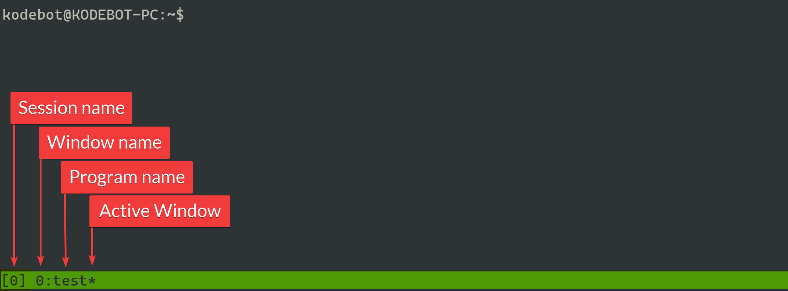

tmux is terminal multiplexer that allows your terminal to be split into different sessions, windows and panes. One of the great thing about tmux is that, you can detach from and reattach to, tmux sessions without terminating the programs running in those sessions.
Session - is a wrapper for your windows and panes that you can create, detach from and reattach to without terminating the programs running in the sessions
It is obvious but just so it is clear, you will lose the sessions and programs running in those sessions on reboot.
Window - is like tabs within a session, you can switch between them but you can only see one window at a time by default
Pane - is a region in the window. By default each with comes with 1 pane. You can add additional horizontal and/or vertical panes as you like

sudo apt install tmux
tmux
tmux new -s <session-name>
| Command | What it does? |
|---|---|
Press Ctrl + b then press c immediately |
Creates new window |
Press Ctrl + b then press <window-number> immediately |
Switch between windows. For example, Ctrl + b then 1 to switch to window 1 |
Press Ctrl + b then press , immediately |
Allows you to change name of the window |
Press Ctrl + b then press " immediately |
Splits the screen vertically [-] by creating a new pane |
Press Ctrl + b then press % immediately |
Splits the screen horizontally [ l ] by creating a new pane |
Press Ctrl + b then press <arrow-key> immediately |
Switching between panes. Takes you to the pane in present in the direction of the arrow key you pressed |
Press and hold Ctrl + b then press <arrow-key> |
Resize pane. Changes the size of the pane based on the arrow key you press |
Press Ctrl + b then press d immediately |
Detach from current session |
| tmux ls | List tmux sessions |
| tmux attach-session -t | Attach to existing session. For example, tmux attach-session -t 0 attaches to session 0 |
| tmux rename-session -t | Rename session. For example, tmux rename-session -t 0 git renames session 0 to git |
| exit | Closes pane, window or a session depending on the context |